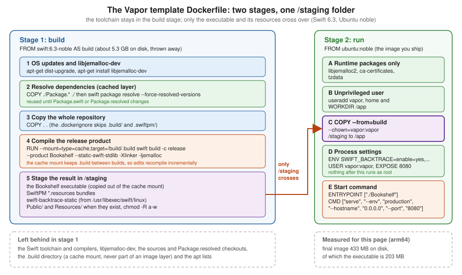

Deployment with Docker
|
This content was generated with the assistance of AI and should be verified against the official documentation before being relied on in production. |
This page is written against Vapor 4.122.2 (the latest 4.x release, 2026-09-17) on the Swift 6.3 toolchain that the official
template Dockerfile uses (swift:6.3-noble resolved to Swift 6.3.3), with Fluent 4.13.0, fluent-postgres-driver 2.14.0
and PostgreSQL 18, checked on 2026-10-17. The Dockerfile, docker-compose.yml and .dockerignore are the ones in
vapor/template main on that date, with the placeholders filled in for a project called
Bookshelf. Everything on this page was run with Docker 29.8.1 (Docker Desktop, 10 CPUs, 7.7 GiB for the VM, Apple Silicon,
so the images are linux/arm64) in a scratch project: the image was built from the Dockerfile shown, the Compose files were
brought up, the migration job ran, and the HTTP calls, sizes and error messages below are copied from those runs. Two things were
not run and are marked where they appear: a crash with the backtracer, and building for another CPU architecture. Vapor 5 is at
5.0.0-beta.4 and not released; nothing here depends on it, and the template Dockerfile is expected to keep its shape.
A Vapor service is one executable plus, optionally, a Public folder and a Resources folder. That makes it an unusually good
fit for a container: the image needs no Swift toolchain at runtime, no package manager and no interpreter, only the
executable and a handful of shared libraries. The official template solves the one difficulty, which is that you must
compile on Linux with the toolchain but should ship without it, with a multi-stage build.
Where it fits
Docker does not change what the application does. The serve command from
Application Lifecycle and the Entrypoint is the container’s
main process, and every setting in Configuration and Environment
reaches it as an environment variable or a command-line argument, because a container has no files you edit after the fact.
The two Docker-specific concerns are therefore what goes into the image (stages, layers, size, user) and how the
container is wired (ports, environment, the database, migrations). The figure shows the first one. Where the image then runs (Fly.io,
a single server, ECS/Fargate, Cloud Run, Kubernetes) is the subject of Deployment Targets, and graceful shutdown, health endpoints and
connection pool sizing are developed on Production and Performance.

The Bookshelf project in the container
The examples build a deliberately small version of the running Bookshelf service: a books table, GET /health,
GET /books, POST /books, and a Public folder. It is a normal SwiftPM package with an executable target, the same layout
the official template generates (see Project Structure and SwiftPM).
// swift-tools-version:6.3
import PackageDescription
let package = Package(
name: "bookshelf",
platforms: [.macOS(.v13)],
dependencies: [
.package(url: "https://github.com/vapor/vapor.git", from: "4.122.2"),
.package(url: "https://github.com/vapor/fluent.git", from: "4.13.0"),
.package(url: "https://github.com/vapor/fluent-postgres-driver.git", from: "2.14.0"),
],
targets: [
.executableTarget(
name: "Bookshelf",
dependencies: [
.product(name: "Vapor", package: "vapor"),
.product(name: "Fluent", package: "fluent"),
.product(name: "FluentPostgresDriver", package: "fluent-postgres-driver"),
],
swiftSettings: [
.enableUpcomingFeature("ExistentialAny"),
.enableUpcomingFeature("InternalImportsByDefault"),
.enableUpcomingFeature("MemberImportVisibility"),
]
),
]
)Source: vapor/template: Package.swift
The database settings come from the environment, which is how the container is configured. The defaults match the template’s Compose file, so the same code runs on a laptop, in Compose and in a cluster:
import Fluent
import FluentPostgresDriver
import Vapor
struct MissingSecret: Error {
let variable: String
}
func configure(_ app: Application) async throws {
// Production must provide DATABASE_PASSWORD; development and tests fall back to the Compose placeholder.
let password: String
if let fromEnvironment = Environment.get("DATABASE_PASSWORD") {
password = fromEnvironment
} else if app.environment == .production {
throw MissingSecret(variable: "DATABASE_PASSWORD")
} else {
app.logger.warning("DATABASE_PASSWORD is not set; using the development placeholder")
password = "vapor_password"
}
app.databases.use(
.postgres(configuration: .init(
hostname: Environment.get("DATABASE_HOST") ?? "localhost",
port: Environment.get("DATABASE_PORT").flatMap(Int.init) ?? 5432,
username: Environment.get("DATABASE_USERNAME") ?? "vapor_username",
password: password,
database: Environment.get("DATABASE_NAME") ?? "vapor_database",
tls: .prefer(try .init(configuration: .clientDefault)))
),
as: .psql)
app.migrations.add(CreateBook())
app.middleware.use(FileMiddleware(publicDirectory: app.directory.publicDirectory))
try routes(app)
}Source: vapor/template: configure.swift
import Fluent
import Vapor
func routes(_ app: Application) throws {
app.get("health") { _ in "ok" }
app.get("books") { req async throws in try await Book.query(on: req.db).all() }
app.post("books") { req async throws -> Book in
let book = try req.content.decode(Book.self)
try await book.create(on: req.db)
return book
}
}The Book model and its CreateBook migration are the usual ones (an id and a required title); the entrypoint is the template’s
@main enum Entrypoint. The package builds in the Swift 6 language mode with no warnings, both natively on macOS and inside the
image. The vapor_password default is a development placeholder only: with --env production the application refuses to
start without DATABASE_PASSWORD, and the production Compose file below also refuses to start without a real value.
The Dockerfile, stage by stage
This is the template’s Dockerfile with {{name}} replaced by Bookshelf. Two details to keep in mind when reading it: a
FROM line starts a new stage with an empty filesystem, and only what a later COPY --from=<stage> names is carried across. The
final image is the last stage; the first one is built, used, and discarded.
# ================================
# Build image
# ================================
FROM swift:6.3-noble AS build
# Install OS updates
RUN export DEBIAN_FRONTEND=noninteractive DEBCONF_NONINTERACTIVE_SEEN=true \
&& apt-get -q update \
&& apt-get -q dist-upgrade -y \
&& apt-get install -y libjemalloc-dev
# Set up a build area
WORKDIR /build
# First just resolve dependencies.
# This creates a cached layer that can be reused
# as long as your Package.swift/Package.resolved
# files do not change.
COPY ./Package.* ./
RUN swift package resolve \
$([ -f ./Package.resolved ] && echo "--force-resolved-versions" || true)
# Copy entire repo into container
COPY . .
RUN mkdir /staging
# Build the application, with optimizations, with static linking, and using jemalloc
# N.B.: The static version of jemalloc is incompatible with the static Swift runtime.
RUN --mount=type=cache,target=/build/.build \
swift build -c release \
--product Bookshelf \
--static-swift-stdlib \
-Xlinker -ljemalloc && \
# Copy main executable to staging area
cp "$(swift build -c release --show-bin-path)/Bookshelf" /staging && \
# Copy resources bundled by SPM to staging area
find -L "$(swift build -c release --show-bin-path)" -regex '.*\.resources$' -exec cp -Ra {} /staging \;
# Switch to the staging area
WORKDIR /staging
# Copy static swift backtracer binary to staging area
RUN cp "/usr/libexec/swift/linux/swift-backtrace-static" ./
# Copy any resources from the public directory and views directory if the directories exist
# Ensure that by default, neither the directory nor any of its contents are writable.
RUN [ -d /build/Public ] && { mv /build/Public ./Public && chmod -R a-w ./Public; } || true
RUN [ -d /build/Resources ] && { mv /build/Resources ./Resources && chmod -R a-w ./Resources; } || true
# ================================
# Run image
# ================================
FROM ubuntu:noble
# Make sure all system packages are up to date, and install only essential packages.
RUN export DEBIAN_FRONTEND=noninteractive DEBCONF_NONINTERACTIVE_SEEN=true \
&& apt-get -q update \
&& apt-get -q dist-upgrade -y \
&& apt-get -q install -y \
libjemalloc2 \
ca-certificates \
tzdata \
# If your app or its dependencies import FoundationNetworking, also install `libcurl4`.
# libcurl4 \
# If your app or its dependencies import FoundationXML, also install `libxml2`.
# libxml2 \
&& rm -r /var/lib/apt/lists/*
# Create a vapor user and group with /app as its home directory
RUN useradd --user-group --create-home --system --skel /dev/null --home-dir /app vapor
# Switch to the new home directory
WORKDIR /app
# Copy built executable and any staged resources from builder
COPY --from=build --chown=vapor:vapor /staging /app
# Provide configuration needed by the built-in crash reporter and some sensible default behaviors.
ENV SWIFT_BACKTRACE=enable=yes,sanitize=yes,threads=all,images=all,interactive=no,swift-backtrace=./swift-backtrace-static
# Ensure all further commands run as the vapor user
USER vapor:vapor
# Let Docker bind to port 8080
EXPOSE 8080
# Start the Vapor service when the image is run, default to listening on 8080 in production environment
ENTRYPOINT ["./Bookshelf"]
CMD ["serve", "--env", "production", "--hostname", "0.0.0.0", "--port", "8080"]The build stage
Base image. swift:6.3-noble is the Docker Official Image of the Swift toolchain on Ubuntu 24.04 (noble). It was 5.27 GB on
disk when pulled here (1.25 GB of compressed content), which is why it must not be the image you ship. The tag is a moving
one: it follows Swift 6.3 patch releases, and on the day of the run it resolved to Swift 6.3.3. For reproducible builds,
pin the digest (see Pinning base images). The toolchain’s Swift version must be at least the package’s swift-tools-version:
the template package declares 6.3, so the template’s Swift 6.3 image is the minimum for the template’s own package, while a package
declared with 6.0 (as Vapor itself is) also builds on older 6.x images.
OS updates and libjemalloc-dev. apt-get dist-upgrade pulls the latest security fixes of the base image. libjemalloc-dev
provides the library and linker symlink for -ljemalloc in the build step. Combining update, upgrade and install in one RUN
keeps the package index out of a stale layer.
Dependency caching. Docker caches a layer as long as the instruction and the files it copied are unchanged. The template
copies only Package.* (that is Package.swift and Package.resolved) and runs swift package resolve before it copies the
sources. Editing a Swift file therefore leaves the resolved-and-cloned dependency layer valid, and only the later steps run
again. The $([ -f ./Package.resolved ] && echo "--force-resolved-versions" || true) fragment makes the build use exactly the
versions in your committed Package.resolved and fail if they disagree with Package.swift, instead of silently resolving newer
ones; without a Package.resolved it resolves freely. Commit Package.resolved for an application.
The build step. One long RUN does four things:
-
--mount=type=cache,target=/build/.buildis a BuildKit cache mount. The.builddirectory (checkouts, intermediate objects) lives in a cache that survives between builds and is not part of any image layer. This is the reason a rebuild after a one-line edit compiles incrementally instead of starting from zero. (The mount needs BuildKit, which is the default builder in current Docker; see Build Cache and Multi-Stage Builds for how cache mounts and layers interact.) -
swift build -c release --product Bookshelfcompiles with optimizations, and only the named product. Use the product name, which is the executable target’s name here; with-c releasethe build also turns on whole-module optimisation. The placeholder{{name}}in the template is this name. -
--static-swift-stdliblinks the Swift runtime and Foundation statically into the executable, so the run image does not need a Swift installation. Glibc,libstdc++,libm,libzand (here) jemalloc stay dynamic. -
-Xlinker -ljemalloclinks the executable against jemalloc, a general-purpose allocator commonly used for many-threaded, allocation-heavy servers in place of glibc’smalloc, mainly to reduce memory fragmentation (not benchmarked for this page; see Production and Performance). The template comment says: "The static version of jemalloc is incompatible with the static Swift runtime", which is why jemalloc is linked as a shared library and why the run stage installslibjemalloc2. Thelddoutput of the built executable confirms it:
$ docker run --rm --entrypoint sh bookshelf:latest -c 'ldd ./Bookshelf'
linux-vdso.so.1 (0x0000ffffa49fc000)
libm.so.6 => /lib/aarch64-linux-gnu/libm.so.6 (0x0000ffff9f0d0000)
libstdc++.so.6 => /lib/aarch64-linux-gnu/libstdc++.so.6 (0x0000ffff9ee40000)
libz.so.1 => /lib/aarch64-linux-gnu/libz.so.1 (0x0000ffff9ee00000)
libjemalloc.so.2 => /lib/aarch64-linux-gnu/libjemalloc.so.2 (0x0000ffff9ece0000)
libgcc_s.so.1 => /lib/aarch64-linux-gnu/libgcc_s.so.1 (0x0000ffff9eca0000)
libc.so.6 => /lib/aarch64-linux-gnu/libc.so.6 (0x0000ffff9eae0000)
/lib/ld-linux-aarch64.so.1 (0x0000ffffa49c0000)Source: vapor/template: Dockerfile
There is no libswiftCore.so and no libFoundation.so in that list, which is what --static-swift-stdlib buys. The same step then copies
the executable and every *.resources bundle that SwiftPM produced (for example for a package that declares resources:) into
/staging. The cache mount disappears when the RUN ends, so anything needed later must be copied out inside the same RUN,
which is why the cp is chained with && to the build.
Staging. The next RUN instructions assemble everything the runtime needs in /staging:
-
swift-backtrace-staticis copied from the toolchain. It is the crash reporter that Swift 5.9+ can spawn when the process crashes; the static variant works without the Swift runtime installed. It pairs with theSWIFT_BACKTRACEvariable below. -
PublicandResources(where Leaf templates and other runtime files live, see Static Files and File IO) are moved over only if they exist, and made read-only for everyone withchmod -R a-w. Writing into the web root at runtime is a classic way to turn a bug into a defacement, and the application has no reason to modify its own templates. The check below shows the result: thevaporuser cannot write there.
$ docker compose exec app sh -c 'touch Public/x'
touch: cannot touch 'Public/x': Permission deniedSource: vapor/template: Dockerfile
If your application writes files (uploads, generated PDFs), put them in a volume mounted somewhere the vapor user owns, not in
Public.
The run stage
Base image. ubuntu:noble is the same distribution and release as the builder. That matters: the executable links against
the glibc of the image that built it, and a glibc is only forward compatible. See The run base must not be older than the build base for what happens with an older
distribution.
Runtime packages. The template installs libjemalloc2 (the runtime half of what the build linked), ca-certificates (needed
for any outbound HTTPS or TLS to a managed database) and tzdata (time zones for DateFormatter and TimeZone). It
runs dist-upgrade first, then removes the package lists to keep the layer small. The two commented-out packages matter when your
application, or a dependency, imports FoundationNetworking (libcurl4, which URLSession on Linux uses, and AsyncHTTPClient
does not need) or FoundationXML (libxml2). If a container exits at start with error while loading shared libraries:
libcurl.so.4, this is the cause.
The vapor user. useradd --user-group --create-home --system --skel /dev/null --home-dir /app vapor creates a system user
and group (uid and gid 999 here) whose home is /app, with no shell skeleton files. COPY --chown=vapor:vapor makes the
files belong to it and USER vapor:vapor makes it the identity of the process and of every later instruction:
$ docker run --rm --entrypoint id bookshelf:latest
uid=999(vapor) gid=999(vapor) groups=999(vapor)
$ docker run --rm --entrypoint ls bookshelf:latest -la /app
total 208844
drwxr-x--- 1 vapor vapor 4096 Oct 17 17:57 .
drwxr-xr-x 1 root root 4096 Oct 17 17:57 ..
-rwxr-xr-x 1 vapor vapor 203554024 Oct 17 17:57 Bookshelf
dr-xr-xr-x 2 vapor vapor 4096 Oct 17 17:48 Public
-rwxr-xr-x 1 vapor vapor 10286496 Oct 17 17:57 swift-backtrace-staticSource: vapor/template: Dockerfile
Running as a non-root user means a remote code execution bug in the service does not hand over root in the container, and it
is a prerequisite for the Kubernetes runAsNonRoot policies and for read-only root file systems. Port 8080 is above 1024, so no
privilege is needed to bind it.
Crash reporting. SWIFT_BACKTRACE=enable=yes,sanitize=yes,threads=all,images=all,interactive=no,swift-backtrace=./swift-backtrace-static
configures Swift’s runtime crash handler: print a backtrace (enable=yes), redact paths to avoid leaking build machine details
(sanitize=yes), include all threads and loaded images, never prompt (interactive=no), and run the helper from the relative
path ./swift-backtrace-static, which resolves against the working directory /app. Without it a Swift server that traps on an
Optional force-unwrap or an array index logs nothing useful. This was verified to be set in the image; a deliberate crash to
read a backtrace was not run for this page.
Port, entrypoint and command. EXPOSE 8080 is documentation; it publishes nothing until you run with -p. The split between
ENTRYPOINT and CMD is the useful part:
-
ENTRYPOINT ["./Bookshelf"]is the executable, resolved againstWORKDIR /app. It is the exec form (a JSON array), so the executable is the container’s PID 1 and receives signals directly rather than through a shell. -
CMD ["serve", "--env", "production", "--hostname", "0.0.0.0", "--port", "8080"]is the default argument list, replaceable by anything after the image name:docker run bookshelf:latest migrate --yesruns the same executable with a different command. That is how Compose gets itsmigrateandrevertservices from one image.
The hostname is the part people miss. The server’s default address is 127.0.0.1 (see
Server Configuration), which inside a container is the container’s own loopback,
unreachable through the published port. --hostname 0.0.0.0 binds all interfaces. Without it docker run -p 8080:8080 starts
cleanly, logs Server started on http://127.0.0.1:8080, and every request from the host is reset.
Stopping. Because the executable is PID 1 in exec form, docker stop delivers SIGTERM to it and Vapor’s lifecycle shuts the HTTP server and
connection pools down in an orderly way. In the run above, docker compose stop app returned in 0.2 s with exit code 0, the log shows
Requesting HTTP server shutdown and HTTP server shutting down, and Docker’s default 10-second grace period before SIGKILL
was never reached. The server’s own limit for in-flight requests is shutdownTimeout (default 10 seconds, see Production and Performance); if your requests
run longer, raise both. With the shell form (CMD ./Bookshelf serve) a shell would be PID 1, and the signal would not reach Vapor,
so the stop would always wait for the full grace period and then kill the process.
Building and running
$ docker build -t bookshelf:latest .
$ docker run --rm -p 8080:8080 \
-e DATABASE_HOST=host.docker.internal \
-e DATABASE_PASSWORD="$DATABASE_PASSWORD" \
bookshelf:latestSource: Vapor docs: Docker Deploys
The first build took 7 minutes 9 seconds on this machine, almost all of it compiling Vapor, NIO, Fluent and PostgresNIO in release
mode. After adding a comment to routes.swift, the second build took 12 seconds: the steps up to and including
swift package resolve were CACHED, COPY . . reran, and the cache mount let swift build recompile only the changed file
(Compiling Bookshelf Book.swift, Build of product 'Bookshelf' complete! (7.44s)). Changing Package.swift or Package.resolved
invalidates the resolve layer and re-clones the dependencies, but the cache mount still holds the objects of unchanged packages.
In CI, where there is no local cache, export and import the cache with --cache-to and --cache-from; see
CI/CD with GitHub Actions. Running the test suite in CI is covered on the Testing page.
Cross-architecture builds. An image built on Apple Silicon is linux/arm64 and will not start on an amd64 server (exec format error). Build
the architecture you deploy with docker buildx build --platform linux/amd64 (see
BuildKit and Buildx); under emulation a Swift release build is many times slower, so prefer a native
builder or CI runner for each architecture. This was not run for this page.
The .dockerignore
The template’s file has two lines:
.build/
.swiftpm/Source: vapor/template: .dockerignore
They keep a macOS .build directory (which contains macOS binaries, and can be gigabytes) out of the build context, which would
otherwise be sent to the daemon and copied by COPY . .. The template’s list is a minimum. COPY . . copies everything else
into the build stage, including .git, .env and any .env.production file. Those files are discarded with the build stage, so they do not
end up in the final image, but they do end up in the build cache and in the build context sent to a remote builder, and a later edit that
adds a second COPY could ship them by accident. A safer file:
.build/
.swiftpm/
.git/
.env
.env.*
*.md
docker-compose*.yml
DockerfileBecause the Dockerfile stages only /staging, no .env file can reach the run image unless you add a COPY for it. Vapor reads
.env files from the working directory (see the dotenv section of
Configuration and Environment); in a container, prefer real
environment variables.
Docker Compose
Compose describes the application, its database and its one-off jobs as one stack. The template generates the file below when you
choose Fluent with PostgreSQL (the {{#fluent}} conditionals in the template source are resolved; the file was used as shown,
with bookshelf:latest as the image name).
volumes:
db_data:
x-shared_environment: &shared_environment
LOG_LEVEL: ${LOG_LEVEL:-debug}
DATABASE_HOST: db
DATABASE_NAME: &db_name vapor_database
DATABASE_USERNAME: &db_username vapor_username
DATABASE_PASSWORD: &db_password vapor_password
services:
app:
image: bookshelf:latest
build:
context: .
environment:
<<: *shared_environment
depends_on:
- db
ports:
- '8080:8080'
# user: '0' # uncomment to run as root for testing purposes even though Dockerfile defines 'vapor' user.
command: ["serve", "--env", "production", "--hostname", "0.0.0.0", "--port", "8080"]
migrate:
image: bookshelf:latest
build:
context: .
environment:
<<: *shared_environment
depends_on:
- db
command: ["migrate", "--yes"]
deploy:
replicas: 0
revert:
image: bookshelf:latest
build:
context: .
environment:
<<: *shared_environment
depends_on:
- db
command: ["migrate", "--revert", "--yes"]
deploy:
replicas: 0
db:
image: postgres:18-alpine
volumes:
- db_data:/var/lib/postgresql
environment:
POSTGRES_USER: *db_username
POSTGRES_PASSWORD: *db_password
POSTGRES_DB: *db_name
ports:
- '5432:5432'The file’s own header says it "is intended for testing and does not implement best practices for a production deployment", and it is worth reading that literally. Going through it:
-
x-shared_environmentis a YAML anchor: a block merged into each service with<<: *shared_environment. The names are exactly the ones the Bookshelfconfigurereads.LOG_LEVEL: ${LOG_LEVEL:-debug}takes the value from the shell that runsdocker compose, falling back todebug. Atdebugthe container logs every SQL statement (the log shown for the migration contains fullCREATE TABLEandINSERTstatements); setLOG_LEVEL=infofor anything that is not local development (see Logging). -
app,migrateandrevertshare one image (bookshelf:latest) and differ only bycommand, which replaces the Dockerfile’sCMD. Each has abuild:section, sodocker compose buildbuilds the same Dockerfile; the image tag names the result, and the three services then use it. -
replicas: 0onmigrateandrevertstopsdocker compose upfrom starting them. They are jobs, not services: you run them on demand withdocker compose run. -
dbis a PostgreSQL 18 Alpine container. Its credentials are the same anchored values, so the database is created with the user and name the application will use. PostgreSQL 18 images keep the data directory under a version-specific path inside/var/lib/postgresql, which is why the volume mounts there rather than at/var/lib/postgresql/data, the mount point of older images. The5432:5432mapping publishes the database to the host for development tools; remove it elsewhere. -
The commented
user: '0'line runs the container as root, only for debugging a permission problem. Do not leave it on.
Migrations as a one-off job
Schema changes are not part of serve. Running migrate is a separate step (see
Migrations and Schema and Commands), and in a container
you run it as a job from the same image that will serve, so the migration code and the model code cannot disagree:
$ docker compose up -d db
$ docker compose run --rm migrate
...
[ INFO ] [Migrator] Starting prepare [database-id: psql, migration: Bookshelf.CreateBook] (FluentKit/Migrator.swift:197)
[ DEBUG ] Executing query [binds: [], database-id: psql, sql: CREATE TABLE "books" ("id" UUID PRIMARY KEY, "title" TEXT NOT NULL)] (PostgresKit/PostgresDatabase+SQL.swift:53)
[ INFO ] [Migrator] Finished prepare [database-id: psql, migration: Bookshelf.CreateBook] (FluentKit/Migrator.swift:200)
...
Migration successful
$ docker compose up -d app
$ curl -s -X POST localhost:8080/books -H 'content-type: application/json' -d '{"title":"Dune"}'
{"title":"Dune","id":"386F1E23-7049-4CA0-9269-7BF6869FEB4B"}
$ curl -s localhost:8080/books
[{"id":"386F1E23-7049-4CA0-9269-7BF6869FEB4B","title":"Dune"}]Source: Vapor docs: Docker Deploys
--yes answers the confirmation prompt that migrate otherwise asks on a terminal, which a job cannot answer. docker compose
run ignores replicas: 0 because you are naming the service explicitly. revert is the same job with --revert, which undoes
only the last batch, so use it on purpose; run it to roll back a deployment that included a migration. Do not call app.autoMigrate()
in configure for a service that runs as several replicas, since all of them would migrate at start-up at once; the one-off job
has no such race.
A healthcheck-based Compose file
depends_on: - db waits only until the db container has started, not until PostgreSQL accepts connections. On a cold start
migrate or app can try to connect first and exit with a connection error. A healthcheck plus condition: service_healthy
makes the order real. The next file keeps the template’s three services, with the changes a first deployment on a single host needs:
secrets from a .env file that is not committed, info logs, a restart policy, a healthcheck on both containers, a read-only
root file system with all Linux capabilities dropped, no published database port, and migrate behind a profile instead of
replicas: 0.
name: bookshelf
x-shared_environment: &shared_environment
LOG_LEVEL: ${LOG_LEVEL:-info}
DATABASE_HOST: db
DATABASE_NAME: ${POSTGRES_DB:-bookshelf}
DATABASE_USERNAME: ${POSTGRES_USER:-bookshelf}
DATABASE_PASSWORD: ${POSTGRES_PASSWORD:?set POSTGRES_PASSWORD in .env}
services:
app:
image: bookshelf:latest
build:
context: .
environment:
<<: *shared_environment
depends_on:
db:
condition: service_healthy
ports:
- '8080:8080'
restart: unless-stopped
read_only: true
cap_drop: [ALL]
security_opt: ['no-new-privileges:true']
healthcheck:
test: ["CMD", "bash", "-c", "exec 3<>/dev/tcp/127.0.0.1/8080 && printf 'GET /health HTTP/1.0\\r\\n\\r\\n' >&3 && head -n1 <&3 | grep -q ' 200 '"]
interval: 10s
timeout: 3s
retries: 3
start_period: 5s
migrate:
image: bookshelf:latest
environment:
<<: *shared_environment
depends_on:
db:
condition: service_healthy
command: ["migrate", "--yes"]
profiles: [tools]
db:
image: postgres:18-alpine
restart: unless-stopped
volumes:
- db_data:/var/lib/postgresql
environment:
POSTGRES_USER: ${POSTGRES_USER:-bookshelf}
POSTGRES_PASSWORD: ${POSTGRES_PASSWORD:?set POSTGRES_PASSWORD in .env}
POSTGRES_DB: ${POSTGRES_DB:-bookshelf}
healthcheck:
test: ["CMD-SHELL", "pg_isready -U $${POSTGRES_USER} -d $${POSTGRES_DB}"]
interval: 5s
timeout: 3s
retries: 10
volumes:
db_data:The .env file next to it holds one line, with a placeholder you replace with a long random value:
POSTGRES_PASSWORD=change-me-placeholderRun with docker compose -f docker-compose.prod.yml run --rm migrate and then up -d app; the result, after the database
and the app had settled, was:
$ docker compose -f docker-compose.prod.yml ps
NAME IMAGE COMMAND SERVICE CREATED STATUS PORTS
bookshelf-app-1 bookshelf:latest "./Bookshelf serve -…" app 13 seconds ago Up 12 seconds (healthy) 0.0.0.0:8080->8080/tcp, [::]:8080->8080/tcp
bookshelf-db-1 postgres:18-alpine "docker-entrypoint.s…" db 20 seconds ago Up 19 seconds (healthy) 5432/tcp
$ curl -s localhost:8080/health
okPoints worth knowing about this file:
-
The app healthcheck uses only what the image has. The
ubuntu:noblerun stage contains nocurlorwget, but it hasbash, whose/dev/tcpredirection opens a socket; the command sends a bare HTTP/1.0 request to/healthand succeeds if the status line contains ` 200 `. The route is yours to define; a real one would also check the database (see Error Handling for how a failing check should respond). -
${POSTGRES_PASSWORD:?...}makes Compose fail to start when the variable is unset, instead of starting a database with an empty password. Without the.envfile the run above ended with:required variable POSTGRES_PASSWORD is missing a value: set POSTGRES_PASSWORD in .env. -
read_only: truewas verified to work: the Vapor service wrote nothing to its own file system. If you enable file uploads or a Leaf cache that writes, add atmpfsor a volume for that path. -
profiles: [tools]keepsmigrateout ofdocker compose up;docker compose run --rm migratestill works because naming a service activates its profile. See Compose in Practice for profiles, secrets and multiple Compose files. -
Compose is a single-host tool. It is the right vehicle for local development, for CI integration tests, and for a small deployment on one server. For several hosts, rolling updates and probes, hand the same image to Kubernetes (Orchestration) or to a managed container service.
Image size and security
What the size is made of
These numbers were measured for the image built above (Docker’s "disk usage" column; the compressed content is smaller):
| Layer or file | Size | Notes |
|---|---|---|
|
110 MB |
Minimal Ubuntu rootfs. |
|
9 MB |
After |
|
214 MB |
The 203 MB |
Final image |
433 MB (99.3 MB compressed content) |
For comparison, the build image |
The runtime base is a quarter of the image; the executable is half of it. The executable is large because it statically contains the Swift runtime, Foundation, NIO and the debug information of all of them. Two ways to reduce it, measured on the executable from this image:
-
strip --strip-debugbrought it from 203 MB to 125 MB, andstrip --strip-allto 91 MB; the stripped executable still started and printed its--help. Stripping removes the symbols the crash reporter uses to name functions, so a crash backtrace shows addresses instead of Swift names; keep an unstripped copy of every released build (for example in your artifact store) next to its image digest to symbolicate later. To do this in the Dockerfile, runstripon/staging/Bookshelfin the staging step, withbinutilsavailable in the toolchain image (it is). -
Do not expect a large win from swapping
ubuntu:noblefor a smaller distribution: the executable dominates. Moving the same executable ontodebian:trixie-slimgave 415 MB against 433 MB.
The run base must not be older than the build base
The compiled executable asks for the C library symbols of the builder. Using an older distribution as the run image fails at start, not at build.
The same executable copied into debian:bookworm-slim (glibc 2.36) produced:
$ docker run --rm bs-bookworm --help
/app/Bookshelf: /lib/aarch64-linux-gnu/libc.so.6: version `GLIBC_2.38' not found (required by /app/Bookshelf)
/app/Bookshelf: /lib/aarch64-linux-gnu/libstdc++.so.6: version `GLIBCXX_3.4.32' not found (required by /app/Bookshelf)
/app/Bookshelf: /lib/aarch64-linux-gnu/libm.so.6: version `GLIBC_2.38' not found (required by /app/Bookshelf)while debian:trixie-slim (a newer glibc) ran it. The rule: the run image’s glibc must be the same as, or newer than, the build
image’s. That is why the template pairs swift:6.3-noble with ubuntu:noble, and why you change both when you move to the next
Ubuntu release. The same constraint applies to the swift-backtrace-static helper copied from the builder.
Other variants, not run for this page:
-
swift:6.3-noble-slimexists as a tag (checked withdocker manifest inspect); it carries the Swift runtime libraries and is meant for executables that were not linked with--static-swift-stdlib. With the template’s static linking,ubuntu:nobleplus three packages is already smaller and simpler. -
Fully static executables (
--static-executable, or the Swift Static Linux SDK) can run onscratchor a distroless static image because they carry their own C library. They are a different build (a musl SDK, no glibc plug-ins, and dependencies that must support it) and are covered in the Swift documentation on static linux builds; test your own dependencies (TLS, DNS lookups, time zones) before committing to it. -
A distroless
ccorbaseimage works for a dynamically linked executable if you copylibjemalloc.so.2(and anything elselddlists that the image lacks) into it. You trade a shell for a smaller attack surface, and losedocker execinto a shell debugging; see Debugging Containers fordocker debugand ephemeral debug containers as the replacement.
Pinning base images
swift:6.3-noble and ubuntu:noble are tags, and a tag is a pointer that moves when the maintainers publish a patched image.
That is wanted for security fixes (the template runs apt-get dist-upgrade on top for the same reason) and unwanted for
reproducibility. The build log records the digests it resolved, and the FROM line accepts them:
FROM swift:6.3-noble@sha256:c2f3ac2eb806ce43f68859c3d52bd3bb1cfc88672fb3a948b76e136d98e39278 AS buildSource: Dockerfile reference: FROM
(That is the digest swift:6.3-noble had on the day of the run; read the current one with docker buildx imagetools inspect swift:6.3-noble.)
Pinned digests are updated deliberately, by a pull request that a tool such as Dependabot or Renovate opens, rather
than at whatever hour the tag moves. Pin the final image you deploy by digest as well (image: registry.example.com/bookshelf@sha256:...).
Consult Image Best Practices and Supply-Chain Security for scanning, SBOMs
and signing, and Docker Security for the runtime side.
Secrets
-
No secret goes into the image.
ENV,ARGand any fileCOPY`d into a layer are readable by anyone who can pull the image (`docker history,docker inspect). The template passes nothing secret; keep it that way, and pass the database password, JWT signing keys, API tokens and APNs keys at run time. -
Run-time delivery. Environment variables are the baseline (
docker run -e, Composeenvironment:andenv_file:, a KubernetesSecretmounted as env). Environment variables are visible indocker inspectand in/proc/<pid>/environof the container, so for stronger isolation use Compose or Dockersecrets:and Kubernetes secret volumes, which mount files under/run/secrets/, and read them inconfigure. How to read a value from a file and fail clearly if it is missing is shown in the secrets section of Configuration and Environment, and the checklist for what to protect is in Security Hardening. -
Build-time secrets, for example a token to fetch a private Swift package, use
RUN --mount=type=secretor--mount=type=ssh, which never enter a layer; do not useARGfor them. -
.envfiles.docker composereads.envfor interpolation (${POSTGRES_PASSWORD}above), and Vapor reads.env.<environment>from its working directory. Keep both out of Git and out of the image (see The.dockerignore).
Hardening checklist
-
Run as
vapor, not root (the template does; do not override withuser: '0'outside debugging). -
Keep the root file system read-only (
read_only: true, orreadOnlyRootFilesystem: truein Kubernetes) and drop capabilities (cap_drop: [ALL]); the service needs none. -
Publish only the application port, and put TLS in front of it with a reverse proxy or the platform load balancer (see Server Configuration); do not publish the database.
-
Rebuild the image on a schedule to pick up OS security updates even when your code did not change, and scan it.
-
Add a healthcheck or, in Kubernetes, liveness and readiness probes against a route such as
/health. -
Set a memory limit on the container and size the connection pool and thread counts to it.
-
Tag images with the Git commit or a version, not only
latest, so a deployment is traceable and a rollback is one command.
Where the books are outdated
The Vapor 3 book by Condon and others (the Kodeco title) builds its Docker image from swift:4.2 and ubuntu:16.04. Neither is
usable today: Ubuntu 16.04 left standard support in 2021, and a Swift 4.2 toolchain cannot compile Vapor 4 or 5, which need Swift
5.x and 6 language features (async/await, concurrency, tools version 6.0 and later). Yeung’s book deploys to a cloud platform
that no longer exists in that form, and the container and Kubernetes chapters of the books predate the template Dockerfile.
Patel’s Vapor 2 book has no container deployment and predates all of this. The practical differences against what the books show:
| Books | Today |
|---|---|
|
|
Building or running Swift in a single image |
Two stages; the toolchain never ships |
A dynamically linked Swift runtime in the image |
|
No crash report configuration |
|
Running as root |
The unprivileged |
A database container set up by hand |
The template Compose file, with |
The rows describe the current template; they are not a claim about every page of the books. The books are not available to this page’s author, and their exact Dockerfiles were not compared line by line.
Common errors
| Symptom | Cause and fix |
|---|---|
|
The server listens on |
|
The run image has an older glibc than the build image. Use the same Ubuntu release for both stages (see The run base must not be older than the build base). |
|
|
|
A dependency imports |
|
The image architecture differs from the host ( |
|
The database was not ready; use a healthcheck with |
Rebuild recompiles everything after a source edit |
|
|
The executable is not PID 1 (shell-form |
|
The file system or directory is read-only or owned by root. Write to a volume owned by |
|
The confirmation prompt needs a terminal. Pass |
|
The |
Version notes
| Version | Change |
|---|---|
Swift 5.9 |
The runtime crash backtracer configured by |
vapor/template |
|
Vapor 4.122.2 |
Current 4.x; requires tools version 6.0 and builds with the template’s Swift 6.3 |
5.0.0-beta.4 |
Vapor 5 beta; the container recipe is expected to stay the same, but dependencies and tools version change, so rebuild and run it before relying on this page for Vapor 5 |
The template’s earlier Dockerfiles (older Swift and Ubuntu releases) were not compared for this page; see the template history for exact dates.